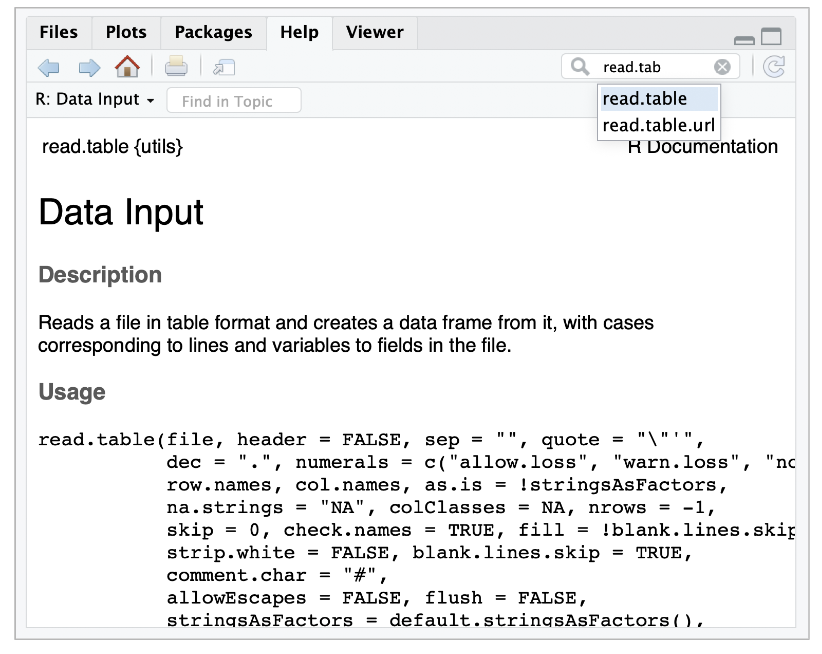
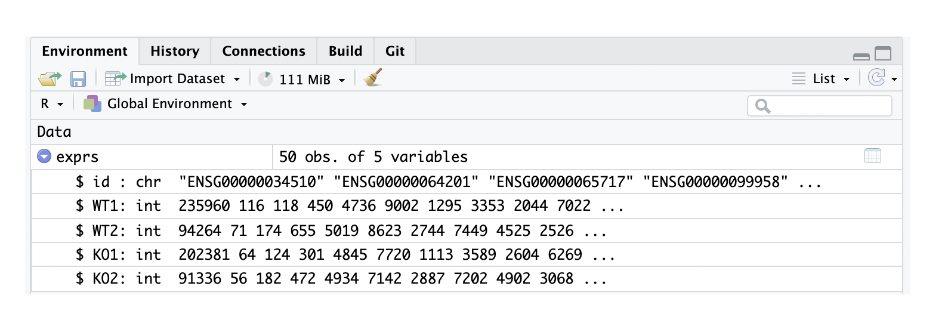

Chapter 6 Lecture des données
6.1 Chargement des données (dans la mémoire de R)
Charger le contenu du fichier “expression.txt” dans une variable nommée “exprs”.
exprs <- read.table(file = "expression.txt", header = TRUE, sep = "\t")Accéder à l’aide d’une fonction
help(read.table)Notation alternative
?read.tableRecherche interactive sous RStudio - Sélectionner l’onglet “Help” du panneau inférieur droit. - Taper “read.table” dans la boîte de recherche.

Sinon, une approche plus simple et plus pratique : - demande à Google “Comment lire une table en R ?” - adapte l’exemple
6.2 Affichage de l’objet “exprs”
Imprimer toutes les valeurs.
print(exprs)## id WT1 WT2 KO1 KO2
## 1 ENSG00000034510 235960 94264 202381 91336
## 2 ENSG00000064201 116 71 64 56
## 3 ENSG00000065717 118 174 124 182
## 4 ENSG00000099958 450 655 301 472
## 5 ENSG00000104164 4736 5019 4845 4934
## 6 ENSG00000104783 9002 8623 7720 7142
## 7 ENSG00000105229 1295 2744 1113 2887
## 8 ENSG00000105723 3353 7449 3589 7202
## 9 ENSG00000116199 2044 4525 2604 4902
## 10 ENSG00000118939 7022 2526 6269 3068
## 11 ENSG00000119285 15783 17359 18591 20077
## 12 ENSG00000121680 3133 2775 2045 2796
## 13 ENSG00000125384 1380 3079 869 2419
## 14 ENSG00000129562 12089 7958 10708 7683
## 15 ENSG00000129932 1744 2247 1513 3104
## 16 ENSG00000134198 122 66 44 16
## 17 ENSG00000135452 635 427 662 291
## 18 ENSG00000140416 83 246 136 267
## 19 ENSG00000147274 16013 17642 15055 18804
## 20 ENSG00000148090 552 1062 615 1082
## 21 ENSG00000148248 62324 33973 56862 37710
## 22 ENSG00000157036 1225 1475 1275 1373
## 23 ENSG00000157869 1201 1034 1025 858
## 24 ENSG00000159433 31 788 30 675
## 25 ENSG00000161692 695 1825 746 1851
## 26 ENSG00000167005 26866 23111 24888 22661
## 27 ENSG00000168517 273 112 190 77
## 28 ENSG00000169570 202 181 207 209
## 29 ENSG00000172216 3515 1981 3204 3174
## 30 ENSG00000175221 1988 4788 2115 5306
## 31 ENSG00000183161 2238 974 2089 996
## 32 ENSG00000185324 1236 2163 1048 2024
## 33 ENSG00000188985 3415 1703 3587 2096
## 34 ENSG00000196867 209 189 293 192
## 35 ENSG00000197081 14741 36309 14941 29645
## 36 ENSG00000198586 1216 4545 1660 3932
## 37 ENSG00000214121 4044 2575 3019 2506
## 38 ENSG00000225630 1405 8135 1569 7866
## 39 ENSG00000226742 158 94 153 178
## 40 ENSG00000238241 90 43 122 143
## 41 ENSG00000248751 518 718 411 597
## 42 ENSG00000250202 261 163 177 191
## 43 ENSG00000251106 94 114 63 86
## 44 ENSG00000253991 77 78 134 92
## 45 ENSG00000254470 3025 3707 2558 4066
## 46 ENSG00000262814 15470 11450 11656 13821
## 47 ENSG00000267228 3801 2465 2787 2301
## 48 ENSG00000267699 1488 1086 1374 939
## 49 ENSG00000269293 424 162 310 120
## 50 ENSG00000279329 55 76 58 70Affichage des premières lignes de l’objet
head(exprs)## id WT1 WT2 KO1 KO2
## 1 ENSG00000034510 235960 94264 202381 91336
## 2 ENSG00000064201 116 71 64 56
## 3 ENSG00000065717 118 174 124 182
## 4 ENSG00000099958 450 655 301 472
## 5 ENSG00000104164 4736 5019 4845 4934
## 6 ENSG00000104783 9002 8623 7720 7142Affichage des dernières lignes de l’objet
tail(exprs)## id WT1 WT2 KO1 KO2
## 45 ENSG00000254470 3025 3707 2558 4066
## 46 ENSG00000262814 15470 11450 11656 13821
## 47 ENSG00000267228 3801 2465 2787 2301
## 48 ENSG00000267699 1488 1086 1374 939
## 49 ENSG00000269293 424 162 310 120
## 50 ENSG00000279329 55 76 58 70Un peu plus de lignes
head(exprs, n = 15)## id WT1 WT2 KO1 KO2
## 1 ENSG00000034510 235960 94264 202381 91336
## 2 ENSG00000064201 116 71 64 56
## 3 ENSG00000065717 118 174 124 182
## 4 ENSG00000099958 450 655 301 472
## 5 ENSG00000104164 4736 5019 4845 4934
## 6 ENSG00000104783 9002 8623 7720 7142
## 7 ENSG00000105229 1295 2744 1113 2887
## 8 ENSG00000105723 3353 7449 3589 7202
## 9 ENSG00000116199 2044 4525 2604 4902
## 10 ENSG00000118939 7022 2526 6269 3068
## 11 ENSG00000119285 15783 17359 18591 20077
## 12 ENSG00000121680 3133 2775 2045 2796
## 13 ENSG00000125384 1380 3079 869 2419
## 14 ENSG00000129562 12089 7958 10708 7683
## 15 ENSG00000129932 1744 2247 1513 3104Explorer le tableau dans un panneau de visualisation
View(exprs)Note: vous pouvez cliquer sur une en-tête de colonne pour trier les données
Explorer le tableau avec le package DT.
library(DT)
datatable(exprs)6.3 Caractéristiques d’un tableau de données
6.3.1 Dimensions
Nombre de colonnes
ncol(exprs)## [1] 5Nombre de lignes
nrow(exprs) ## [1] 50Dimensions
dim(exprs)## [1] 50 56.3.2 Noms des colonnes et des lignes
Noms des colonnes
colnames(exprs)## [1] "id" "WT1" "WT2" "KO1" "KO2"Idem
names(exprs) ## [1] "id" "WT1" "WT2" "KO1" "KO2"Noms des lignes
rownames(exprs)## [1] "1" "2" "3" "4" "5" "6" "7" "8" "9" "10" "11" "12" "13" "14" "15"
## [16] "16" "17" "18" "19" "20" "21" "22" "23" "24" "25" "26" "27" "28" "29" "30"
## [31] "31" "32" "33" "34" "35" "36" "37" "38" "39" "40" "41" "42" "43" "44" "45"
## [46] "46" "47" "48" "49" "50"6.3.3 Résumé rapide des données par colonne
Statistiques par colonne
summary(exprs)## id WT1 WT2 KO1
## Length:50 Min. : 31 Min. : 43.0 Min. : 30.0
## Class :character 1st Qu.: 264 1st Qu.: 203.2 1st Qu.: 228.5
## Mode :character Median : 1338 Median : 1903.0 Median : 1324.5
## Mean : 9358 Mean : 6498.6 Mean : 8356.0
## 3rd Qu.: 3730 3rd Qu.: 4727.2 3rd Qu.: 3491.2
## Max. :235960 Max. :94264.0 Max. :202381.0
## KO2
## Min. : 16.0
## 1st Qu.: 223.5
## Median : 2060.0
## Mean : 6489.5
## 3rd Qu.: 4926.0
## Max. :91336.0Structure de la variable
str(exprs)## 'data.frame': 50 obs. of 5 variables:
## $ id : chr "ENSG00000034510" "ENSG00000064201" "ENSG00000065717" "ENSG00000099958" ...
## $ WT1: int 235960 116 118 450 4736 9002 1295 3353 2044 7022 ...
## $ WT2: int 94264 71 174 655 5019 8623 2744 7449 4525 2526 ...
## $ KO1: int 202381 64 124 301 4845 7720 1113 3589 2604 6269 ...
## $ KO2: int 91336 56 182 472 4934 7142 2887 7202 4902 3068 ...Même résultat que dans le panneau “Environment”
